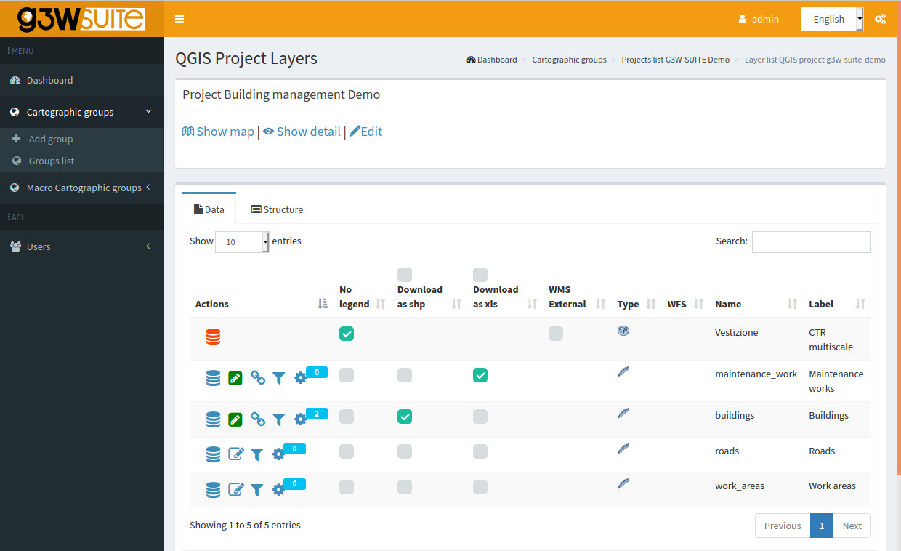
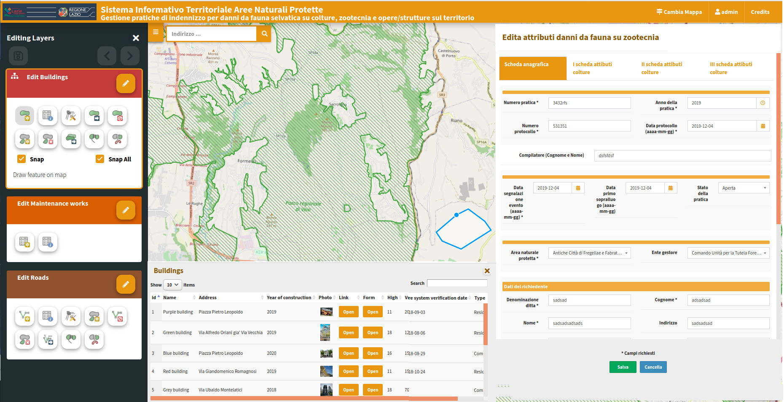

WebGIS publishing and management
Integrated map client and admin panel for multi-user projects, editing workflows and permission management.
Open source solution to publish and manage WebGIS services directly from your QGIS projects, in cloud or in house.

No QGIS plugin needed: upload your .qgs or .qgz file and your WebGIS service is immediately ready.
Create your QGIS cartographic project by using your data
Personalise your project by defining project structure, join and 1:N relations, editing form and widgets, interactive charts (DataPlotly integration), print layout and every other graphic and functional feature
Upload and upgrade your data in your favourite format (SQLite/SpatiaLite, GeoPackage, Shapefile, Virtual layer)
Use PostGreSQL/PostGis, Oracle Spatial and MSSQL DB data
Access your own web portal to publish your projects as WebGis service
Manage your projects independently by defining users, editing permissions and constraints, interactive graphics, search methods and activating the most useful features for your management system



Publish a QGIS project as WebGIS while keeping styles, symbols, editing forms and print layouts, without reconfiguring the project.
The admin panel lets you manage users, roles and permissions per project, including multi-team scenarios.
Web editing supports collaborative workflows and field data collection, including mobile and offline use cases.
From territorial planning to network management, with active projects in different operational contexts.
WebGIS publishing, public-sector interoperability and advanced geospatial analysis: three paths based on project needs.
Integrated map client and admin panel for multi-user projects, editing workflows and permission management.
Supports digital transition scenarios with dedicated integrations and PDND workflows.
Run QGIS Processing models directly from the web client to integrate analysis into operational workflows.
Field data collection and WebGIS publishing in one workflow, from survey to sharing.
Discover the solutionsAn active community keeps G3W-SUITE stable, up to date and continuously evolving.